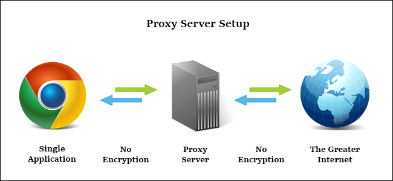
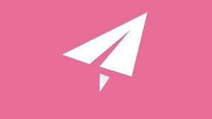

大家都知道，內地是封閉的網絡環境，政府的防火長城會隔擋嘗試連到外國網站的連線。然而人總是追求自由，人們一直找尋各種翻牆方法，成熟的proxy和vpn技術便成為了翻牆的主要工具。
然而在防火長城日漸完善下，proxy和vpn逐漸失效，這時開源社群出現了一個名為shadowsocks的專案，專為翻牆而生。雖然作者已刪除源碼，但ss已經成為了其中一種主流的翻牆工具了。
以下會解釋Proxy、VPN、Shadowsocks的原理和歷史。
Proxy
1. Gateway / Tunneling proxy
不修改任何檔案，只做傳送的中間人。
2. Forward proxy
代替用家發送request，然後把response傳回用家。

用途
- 隱藏身份
- 突破防火牆限制
- caching
3. Reverse proxy
通常放在server前面，代替server接收和傳送network request到外面的世界。

用途
- 保護private network中的server
- load-balancing
- authentication
- decryption
- caching
Proxy種類
HTTP Proxy
- 一般用於代理Browser request
- 理解http packet中的內容
- 可以替換http header內容
- 可以把重複的request結果cache起
Socks Proxy
- 一般是全局代理所有TCP request
- 只負責數據傳輸，不理會應用層協定
- 最新協定是版本5，又稱Socks5
VPN
公司、學校很多時候都有私人網絡（Private network），一般都會封鎖外部、不在這個network裡的機使用內部資源。
VPN（Virtual private network）原本目的就是，讓不在private network之中的用家，都可以透過VPN連上其中一部裡面的機，然後透過這台機進入內部網絡。

Proxy vs VPN
Proxy與VPN一樣，都可以代替使用者上網，替換封包IP，藉以隱藏使用者的身份。但兩者在安全性上卻有很大差別。
一般Proxy協議不涉及加密，封包是原封不動到達proxy server的，缺點是欠缺安全性，不過用上https協定預先加密，其實也沒有很不安全，而且proxy過程簡單，速度快。

由於VPN原本是用在進入私人網絡，所以其協議對安全性的要求較高。連接時會經過幾次來回的認證和交換密鑰，才會連接上，而且所有到達VPN server的封包都是被加密的。缺點就是需要更大效能在加密和解密之上。
翻牆
一般proxy和VPN已經不是可以穩定翻牆的工具了。
首先Proxy沒有加密，封包容易辨認。而VPN的封包有些特徵，例如VPN連接時的幾次交換、常用的連接port等等，GFW都可以透過這些分辨出翻牆流量，加上機器學習，確認是用作翻牆server的話直接封掉。
Shadowsocks
現在最火的翻牆工具莫過於Shadowsocks了，作者為@clowwindy（已被請去喝茶）。Shadowsocks基於Socks5協定，與一般Socks proxy一樣，只負責傳送數據，不理會應用層內容。
Shadowsocks為翻牆而生，可以算作proxy，但又不同於一般proxy，有些專為翻牆而設的特性：
- Socks5協定是對browser和local ss client之間的，不需要握手（Hand-shaking），封包沒有明顯特徵，使GFW無法分辨。
- ss client和server的流量都會被加密，client和server之間以密碼作密鑰。
- 雖然以密碼作加密手段遠不及VPN安全，但這樣做比VPN更難偵察流量。
- 比VPN效能需求低
SSR

SSR是另一作者@breakwa11（破娃）推出的「改良版」，他認為SS不夠隱蔽性，於是又加入了一些數據混淆，並兼容ss協議（理論上）。
延伸閱讀
自由戰士奮鬥史：墙与梯的较量——那些年我们一起用过的翻墙手段
- 以前出現過的翻牆工具和各種手法，真的是道高一尺，魔高一丈。
防火長城技術：防火長城Wiki
Shadowsocks技術：
SS和SSR的歷史：
Firefly Proxy
如果想看如何使用shadowsocks，可以到 翻牆必備：Shadowsocks建置教學。